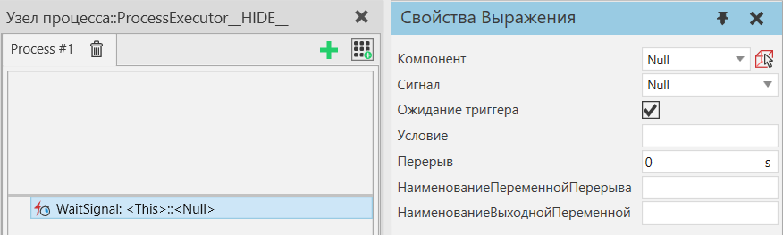

Ждать Сигнал |
|
Оператор Ждать Сигнал позволяет вам приостановить выполнение процесса до тех пор, пока не будет получен сигнал. Вы также можете использовать его для присвоения значения сигнала переменной процесса для последующего использования другими операторами. Вы можете выбрать логический, целочисленный, вещественный или строковый сигнал любого статического компонента на текущей планировке. Чтобы дождаться определенного значения сигнала или диапазона значений, определите выражение для поля Условие. Используйте свойство Перерыв, чтобы ограничить максимальное время ожидания. Примечание: Если Перерыв достигнут, текущее значение сигнала в это время не оценивается и не записывается в выходную переменную значения. Если вы хотите получить текущее значение сигнала, вам нужно установить для ТриггерОжидания значение False, оставить Условие пустым и указать НаименованиеВыходнойПеременной. Примечание: В отличие от общей обработки переменных процесса, выходная переменная всегда представляет собой одно значение, и это значение никогда не преобразуется в список.  Свойства
|